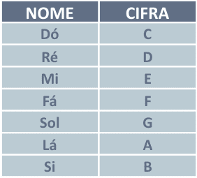
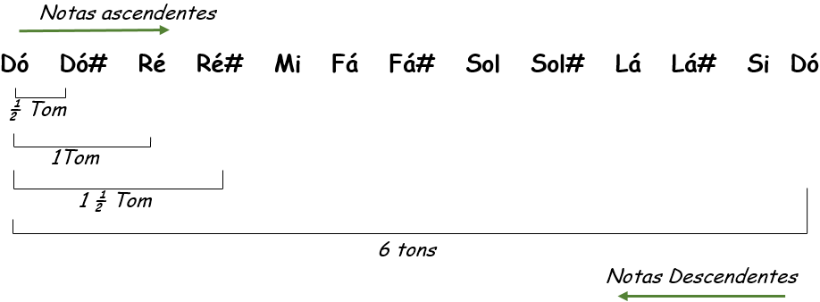
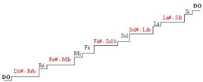

Escala Cromática e Escala Maior Natural
Leitura de cifras
De agora em diante sempre que formos falar de alguma nota usaremos apenas a sua cifra:
TOM, SEMITOM, SUSTENIDO, BEMOL
Tom e semitom (ou tono e semitono): são diferenças específicas de altura, existentes entre as notas musicais, isto é, são “medidas” mínimas de diferença entre grave e agudo. A diferença de um tom equivale à diferença de 2 semitons. Na música de origem europeia algumas notas têm tons entre elas, enquanto outras têm semitons:
Sustenido (#) e bemol (b)
São associados às notas existentes entre notas com um tom entre si; são chamados de “Alterações”, e as notas associadas a eles, de notas alteradas. Assim:
Escala Maior
As Escalas Musicais podem ter diversas utilizações. Por isso elas são tão importantes para o músico. Com elas, podemos criar solos, montar campos harmônicos e acordes, melodias de voz, pegar músicas de ouvido entre outras coisas.
Basicamente, o que diferencia uma escala de outra é a disposição de seus intervalos, que normalmente são compreendidos dentro de uma oitava.
A Escala Natural é composta por sete notas musicais, com dois semitons e cinco tons que são constituídas através de uma fórmula que separa as notas
Veja a seguir a formação da escala maior e de seus intervalos

Dó - Ré menor - Mi menor - Fá - Sol - Lá menor - Si diminuto
Escala Cromática
Formado apenas por semitons e um conjunto de doze notas: C- C#- D- D# -E- F- F#- G- G#- A- A#- B#

Tríade
Conjunto de três notas que formam um acorde

Graus
As notas que formam a escala são chamadas de Graus.Os graus são enumerados e indicados por algarismos romanos. A primeira nota equivale ao Grau I; a segunda nota equivale ao Grau II; a terceira nota, ao Grau III e assim por diante. Cada grau recebe um nome, de acordo com sua função dentro da escala. Vamos conhecer a seguir os sete graus da escala diatônica:
I. Tônica - Além de dar o nome à escala e ao tom, é a primeira nota da escala;
II. Supertônica - Está um grau acima da tônica e um grau abaixo da mediante. É a segunda nota da escala;
III. Mediante - Localizada um grau acima da supertônica e um grau abaixo da subdominante, é a terceira
nota da escala.
IV. Subdominante - Encontra-se meio grau acima da mediante e um grau abaixo da dominante. É a quarta nota
da
escala;
V. Dominante - A quinta nota da escala está situada entre a Subdominante e a Superdominante. É o grau
mais
importante da escala, depois da tônica;
VI. Superdominante - Encontra-se um grau acima da dominante e um grau abaixo da sensível ou subtônica. É
a
sexta nota da escala;
VII. Sensível ou Subtônica - A sétima nota da escala pode ser chamada de duas maneiras diferentes,
dependen do da sua distância em relação à tônica. Quando localizada meio tom abaixo da tônica, será
chamada
de Sensível. Quando localizada um tom abaixo da tônica, será chamada de Subtônica.
Lição de Casa
1º: Seguindo a regra de formação de escalas maiores escreva as escalas maiores de todas as notas Naturais;
2º: Treinar no teclado todas as escalas maiores após escrever;
3º: Treinar os intervalos da notas;

Ouça aqui o som das notas para ir se familiarizando
C
C#
D
D#
E
F
F#
G
G#
A
A#
B